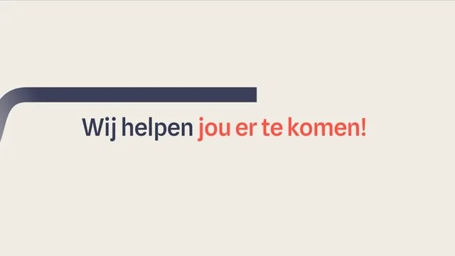
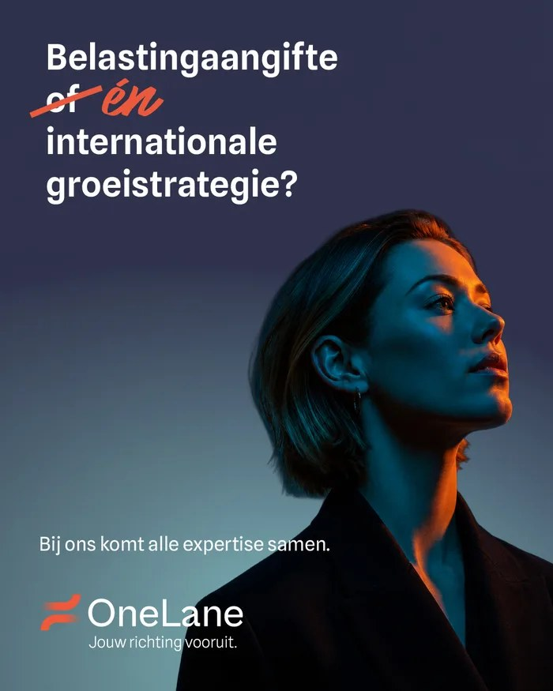

Rebrandingcampagne NOVA
Campagne-evaluatie
5 oktober t/m 15 november 2026
D8

Amplifying impact
1
Plan
Amplifying impact
D8
1 · Plan · Briefing, aanpak en planning
De nieuwe naam snel en groots bekend maken
Briefing
De Jong & Laan gaat verder als OneLane. De naam moet snel bekend en herkenbaar worden, met bereik én herhaling.
1,6 mln
bereik
4,9 mln
contactmomenten
Aanpak
1
Bereik · video in feed, stories en reels
2
Traffic · afbeeldingen naar de website
3
Remarketing · tag-on en afbeeldingen
Plus radio en buitenreclame in twee flights.
Budget
Radio en buitenreclame
€ 20.165
Online kanalen
€ 15.050
Ster (vanaf 9 nov)
€ 2.500
Totaal
€ 37.715
Creatie D8 · Media Flii Media
Planning
Dashboard: planning · radio-uitzendschema · assets · rapportages
5 okt
12 okt
19 okt
26 okt
2 nov
9 nov
Radio · NPO Radio 1
NS-stations
Snelwegmasten
Online kanalen
Online video · Ster
Amplifying impact
D8
2
Resultaat
Amplifying impact
D8
2 · Resultaat · Totaal
Focus op merkbekendheid geeft resultaat
Bereik
+58%
2,6 mln
Doel 1,62 mln
Contactmomenten
+54%
7,6 mln
Doel 5,0 mln
CPM
−37%
€ 4,82
Doel € 7,60
Frequentie
−3%
3,0
Doel 3,1
Klikken
−5%
10.151
Doel 10.722
Besteed
−3%
€ 36.677
Budget € 37.715
Contact via de site
348
Alle ingestuurde formulieren
Reacties op social
630
99,8% positief
Zo meten we merkbekendheid
- Merkbekend: mensen met 3 campagne-contactmomenten, een websitebezoek of een volledig afgekeken video
- Betrokkenen: mensen met minstens 3 contactmomenten of 30 seconden kijktijd, in de remarketingpool
- Meting radio & outdoor: via de toename in direct verkeer en zoekopdrachten op de merknaam
Amplifying impact
D8
2 · Resultaat · Per kanaal
Targets vs. resultaat
| Kanaal | Besteed | ± doel | Bereik | ± doel | Contactmomenten | ± doel | Frequentie | ± doel | CPM | ± doel |
|---|---|---|---|---|---|---|---|---|---|---|
| Buitenreclame | € 10.000 | 0% | 400.000 | 0% | 1.400.000 | 0% | 3,5 | 0% | € 7,14 | 0% |
| Radio | € 10.165 | 0% | 611.000 | 0% | 1.894.100 | 0% | 3,1 | 0% | € 5,37 | 0% |
| Meta | € 5.335 | −3% | 740.756 | +202% | 2.619.640 | +256% | 3,5 | +18% | € 2,04 | −73% |
| € 4.899 | −11% | 239.260 | +299% | 601.554 | +265% | 2,5 | −9% | € 8,14 | −76% | |
| YouTube | € 2.488 | 0% | 202.673 | +103% | 325.692 | +30% | 1,6 | −36% | € 7,64 | −24% |
| Spotify | € 1.291 | −14% | 194.511 | +489% | 356.986 | +261% | 1,8 | −39% | € 3,62 | −76% |
| Ster | € 2.500 | 0% | 166.667 | 0% | 416.667 | 0% | 2,5 | 0% | € 6,00 | 0% |
| Totaal | € 36.677 | −3% | 2.554.867 | +58% | 7.614.639 | +54% | 3,0 | −3% | € 4,82 | −37% |
Frequentie per platform: veel mensen zagen de campagne op meerdere platformen en zijn in totaal vaker bereikt.
Amplifying impact
D8
2 · Resultaat · Websitebezoek
Meer bezoek en zoekopdrachten met radio & outdoor
Websitebezoeken per dag
Zoekopdrachten op de merknaam (vertoningen)
Radio & outdoor actief
5 okt
12 okt
19 okt
26 okt
2 nov
9 nov
0
200
400
600
Met radio & outdoor gemiddeld 276 bezoeken en 150 merkzoekopdrachten per dag, zonder 182 en 106.
Amplifying impact
D8
2 · Resultaat · Sentiment
De reacties zijn vrijwel volledig positief
| Kanaal | Reacties | Positief | Negatief | Opmerkingen | Gedeeld | Opgeslagen |
|---|---|---|---|---|---|---|
| Meta | 560 | 559 | 1 | 6 | 30 | 37 |
| 68 | 68 | 0 | 4 | 2 | − | |
| YouTube | 2 | 2 | 0 | 0 | − | − |
| Totaal | 630 | 629 | 1 | 10 | 32 | 37 |
99,8%
positief: 629 van de 630 reacties, met één boze reactie op Meta.
Opgepikt door de vakpers
De nieuwe naam verscheen bij SRA en Accountant.nl.
Meeste likes

388 likes
Merkvideo (20 sec)
Meta 331 · LinkedIn 57

148 likes
Tag-on (6 sec)
Meta 138 · LinkedIn 10

54 likes
Afbeelding “belastingaangifte én groeistrategie”
Meta
Amplifying impact
D8
3
Inzichten
Amplifying impact
D8
3 · Inzichten · Key insights
Vijf dingen die we nu weten
1
Toename in merkbekendheid tijdens campagne periodes op Radio & Outdoor
- 52% meer websitebezoek: 276 tegen 182 per dag
- 42% meer merkzoekopdrachten: 150 tegen 106 per dag
- CPM € 6,12 en CPC € 8,94 (per extra bezoek), online € 3,82 en € 3,02
2
Meta voor bereik, LinkedIn voor de doelgroep
- Meta 4× goedkoper per contactmoment (€ 2,04 tegen € 8,14)
- LinkedIn-bezoekers blijven langer: 1:49 tegen 0:41 min
3
Instagram haalt bezoekers, Facebook kijkers
- Instagram: 3,4× zoveel websitebezoek per 1.000 vertoningen
- Facebook: video 2,3× zo vaak helemaal bekeken
4
Kort wint
- Tag-on (6 sec) 31× vaker uitgekeken dan video (20 sec)
- Sterk als herinnering na de brede video
- Beste afbeelding: “boekhouding én overname” (CTR 1,7% tegen 1,3%)
5
Groot Engelstalig publiek
- 1 op 5 bezoeken is Engelstalig, net als 60 van de 348 contactmomenten
- Advies: in de toekomst ook campagnes in het Engels draaien
Amplifying impact
D8
3 · Inzichten · Website
Het bezoek groeit sinds de start
10.151
Websitebezoeken
+91%
Bezoek per week
Laatste campagneweek tegen de eerste
+144%
Zoekverkeer via Google
Laatste campagneweek tegen de eerste
348 keer contact
Via ingestuurde formulieren, waarvan 60 Engelstalig.
Daarvan 25 contact- en adviesaanvragen.
Ingestuurde formulieren per pagina
| Pagina | Aantal |
|---|---|
| Homepage (NL en EN) | 167 |
| Locatiepagina’s | 32 |
| Nieuwsbericht nieuwe naam | 27 |
| Kennis & inzichten | 24 |
| Pagina | Aantal |
|---|---|
| Contactpagina | 20 |
| Ons verhaal (NL en EN) | 16 |
| Actualiteiten | 12 |
| Plan een adviesgesprek | 5 |
Amplifying impact
D8
3 · Inzichten · Learnings & vervolg
Wat we meenemen
Learnings
Radio bouwt status, online zorgt voor actie
Op radiodagen 2,4 keer zoveel zoekverkeer en 57% meer direct bezoek. Klikken naar de site komen vooral uit online.
Video, tag-on en afbeelding werken als keten
De video vertelt het verhaal en bouwt doelgroepen, de tag-on zorgt voor herkenning (5 keer zo vaak afgekeken) en de afbeelding haalt de bezoeker binnen (2% CTR).
Branding miste een concrete call-to-action
Contact via de site komt vooral via zoeken en direct, nauwelijks via advertentieklikken. Geef een duidelijke vervolgstap mee, zoals een adviesgesprek.
Volgende keer beter
Ingeboekt materiaal nalopen
De radio-tag-on was in flight 1 niet ingeboekt. Dit is achteraf hersteld met een 20% uitbreiding van zendtijd in de 2e flight.
Meetbaarheid
Koppeling oud GA4 domein, geen dynamische UTM-tags en instellen van conversiedoelen; nu herkent GA4 maar beperkt de herkomst van advertentiebezoeken en contacten.
Remarketing vroeg vullen
Remarketing groepen zijn met de huidige campagne opgebouwd en voldoende groot om met vervolg campagnes aan te spreken op YouTube & Spotify.
Amplifying impact
D8
3 · Inzichten · Vervolg
What’s next?
1
Remarketing always-on
Aanleiding: De remarketingpool is gevuld met 2,6 mln bereikte mensen; video en tag-on bouwden herkenning op.
Actie: Binnen 180 dagen (databehoud) doorlopend postboosts op LinkedIn en Meta aan dit publiek.
2
Conversiecampagne always-on
Aanleiding: Weinig direct contact uit de merkbekendheidscampagne: die richtte zich op videoweergaven en herkenning, zonder concrete call-to-action.
Actie: Een conversiegerichte campagne om nu leads te verzamelen, gericht op het adviesgesprek.
3
Bing Advertising
Aanleiding: Paid search trekt het juiste verkeer: 2,3 contact per 100 bezoeken.
Actie: Naast Google ook adverteren via Bing.
4
Engelstalig publiek bedienen
Aanleiding: 1 op 5 bezoeken en 60 contactmomenten zijn Engelstalig.
Actie: Campagnes ook in het Engels draaien.
5
Volgercampagnes
Aanleiding: Veel mensen hadden voor het eerst interactie met social of site.
Actie: Eenmalig apart oproepen om de pagina te volgen.
6
GEO: AI-zoeken
Aanleiding: ChatGPT stuurt al bezoek, met de langste sessies (5:32 min).
Actie: ChatGPT business hub koppelen en citation tracking.
Amplifying impact
D8
Bedankt
D8
Amplifying impact